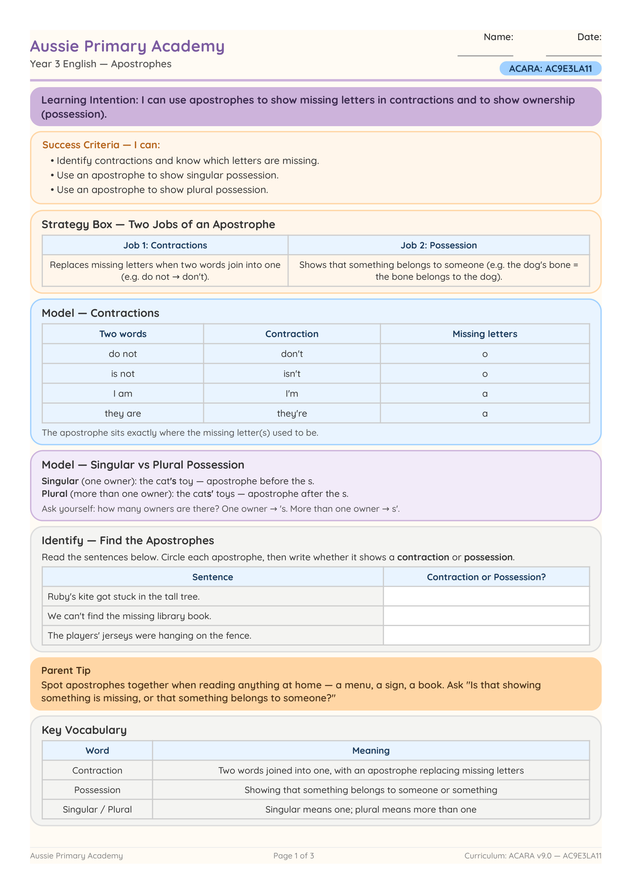

Year 3 · English · Grammar · Free Printable
Year 3 Apostrophes Worksheet – Contractions & Possession
Help Year 3 students understand the two jobs of an apostrophe through clear examples, guided practice, independent application and challenge questions.
Worksheet Preview

Learning Intention
Students learn that apostrophes replace missing letters in contractions and show singular or plural possession.
Australian Curriculum
AC9E3LA11
Understand that apostrophes signal missing letters in contractions and are used to show singular and plural possession.
What Is Included?
- Contraction examples and practice
- Singular and plural possession
- Its versus it's
- Create and challenge questions
- Complete answer key and teacher checklist
Teaching Tip
Ask students whether an apostrophe shows missing letters or ownership. Give extra practice distinguishing ordinary plurals from possessive nouns.